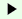

中国語
イタリア語
フランス語
スペイン語
ポルトガル語
オランダ語
ドイツ語
スウェーデン語
英語
全表示
全非表示
目次
5W1H
5W1H
日本語
中国語
イタリア語
フランス語
スペイン語
ポルトガル語
オランダ語
ドイツ語
スウェーデン語
英語
いつ

什么时候
quando
quand
cuándo
quando
wanneer
wann
när
when
どこで
在哪里
dove
où
dónde
onde
waar
wo
var
where
だれが
谁
chi
qui
quién
quem
wie
wer
vem
who
なにを
什么
che cosa
quoi
qué
o quê
wat
was
vad
what
なぜ
为什么
perché
pourquoi
por qué
por que
waarom
warum
varför
why
どのように
怎么
come
comment
cómo
como
hoe
wie
hur
how